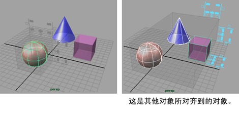
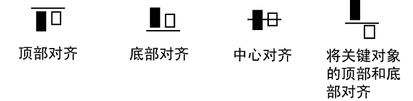
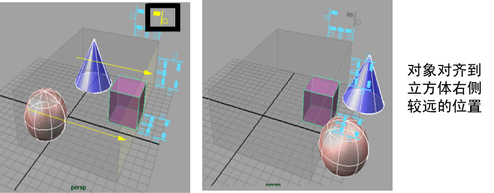
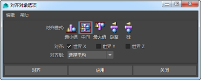
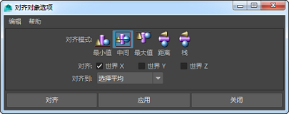

使用“编辑枢轴”(Edit Pivot)模式对齐对象
- 选择要与其他对象对齐的对象。
- 按住 Insert 或 d 键以进入“编辑枢轴”(Edit Pivot)模式。
- 单击选定对象上的组件。
对象枢轴将与选定组件自动对齐。
- 松开 Insert 或 d 键以退出“编辑枢轴”(Edit Pivot)模式。
- 按住 v 键以激活“捕捉到点”(Snap to Points)模式。
- 将选定的对象向场景中的另一个对象拖动。
使用交互式操纵器对齐对象
- 选择修改 > 对齐工具(Modify > Align Tool)。
- 选择要对齐的对象。
其他对象将对齐到最后一个选定（关键）的对象。该对象将亮显为绿色。
 - 请执行下列任一操作：
- 单击图标对齐对象。图标显示边界框的对齐方式。例如：

- 使用编辑 > 撤消(Edit > Undo)或按 z 以反转对齐。
- 单击图标对齐对象。图标显示边界框的对齐方式。例如：
在以下示例中，对象将对齐到透明框外部立方体的最右侧。

通过设置选项对齐对象
- 选择要对齐的对象。
- 选择“修改 > 捕捉对齐对象 > 对齐对象”(Modify > Snap Align Objects > Align Objects)>
 。

。
 - 选择对齐模式。“最小值”(Min)沿距离 0 最近的边对齐对象。“最大值”(Max)沿距离 0 最远的边对齐对象。“中间”(Mid)对齐中心。“距离”(Dist)沿对象之间的距离均匀分布对象。“栈”(Stack)移动对象，使对象排列到一起，彼此之间没有空间。
- 选择对齐所沿轴。例如，若要对齐顶部/底部，请启用“世界 Y”(World Y)。
- 选择对象要移动到的目标。“选择平均”(Selection Average)将对象移动到对象坐标的平均位置。“上一个选定对象”(Last selected object)将对象移动到关键对象。该对象将亮显为绿色。
- 单击“对齐”(Align)。